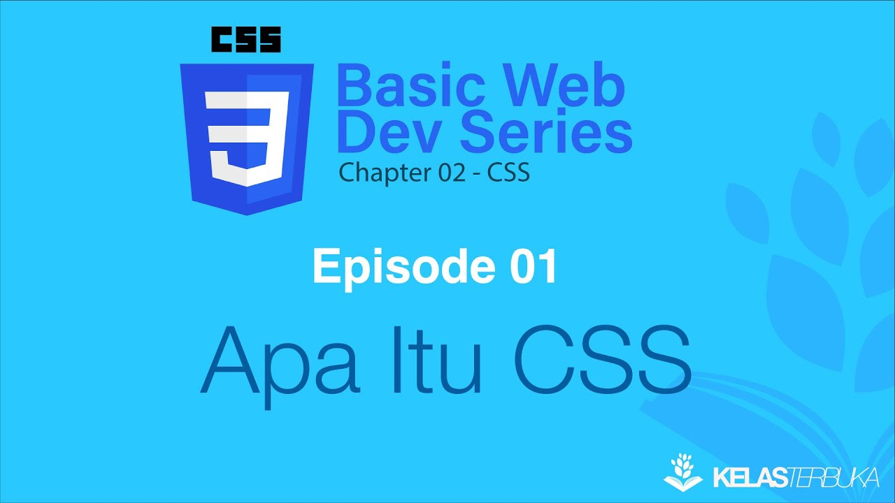

Multimedia Interaktif
Kartu E-Learning Pemrograman Website
Komponen ini menampilkan integrasi media digital native HTML5. Pada kartu ini, status featured menimpa gaya default deskripsi sebagai bukti spesifisitas selector CSS.